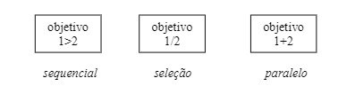
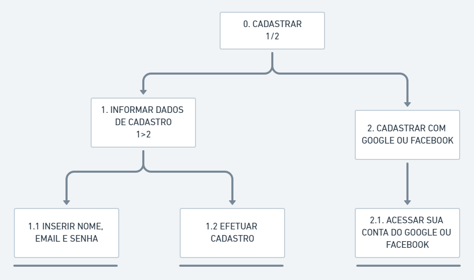
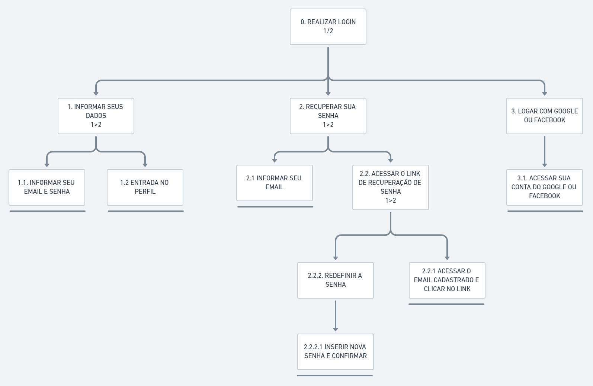
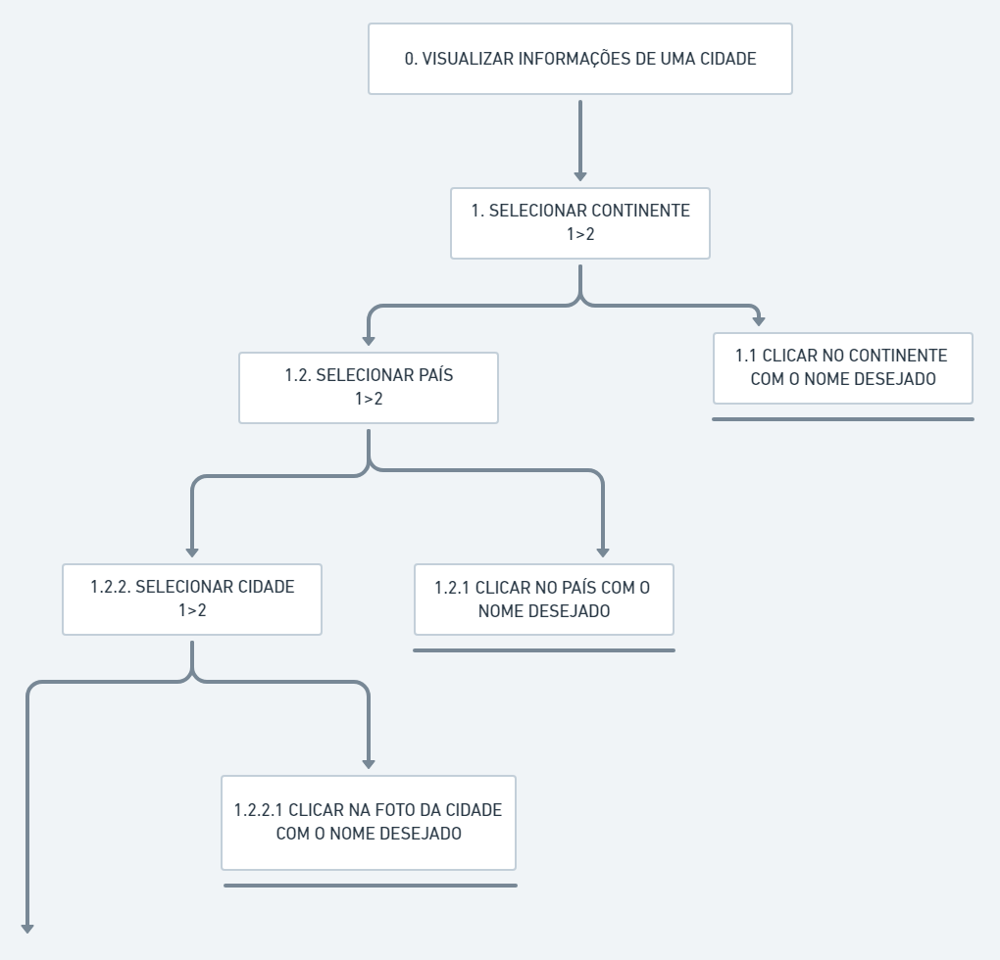
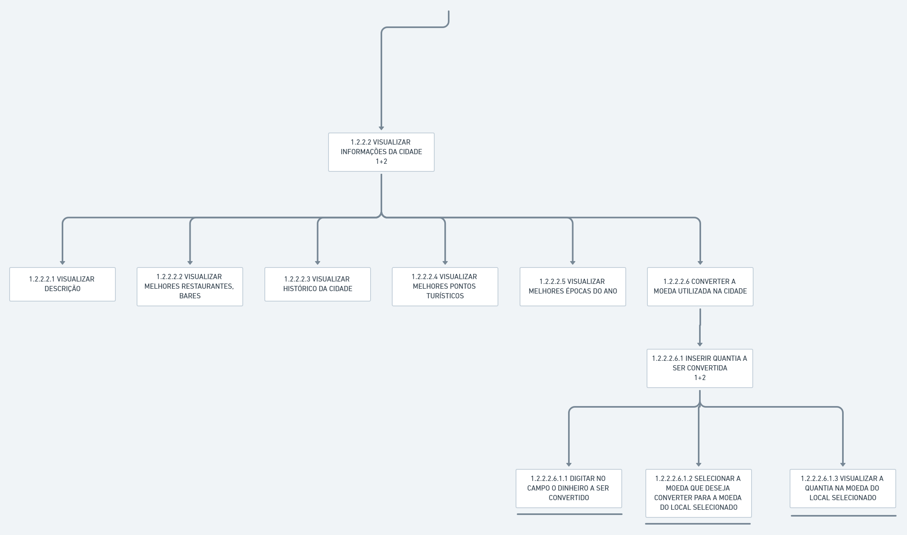
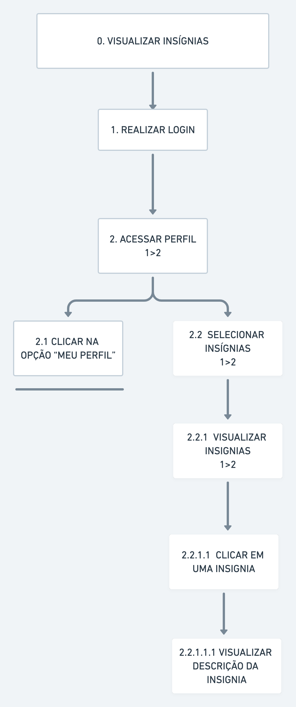

Análise hierárquica de visualização
A idéia básica desta análise é relacionar o que as pessoas fazem (tarefas), por que o fazem e quais as conseqüências, caso não façam corretamente. O ponto de partida desta análise são os objetivos do usuário. A partir de um objetivo, as principais tarefas associadas ao alcance deste objetivo são identificadas. Neste contexto, uma tarefa pode ser vista como qualquer parte do trabalho que precisa ser realizada – um plano, ou seja, são os subobjetivos de um objetivo. O objetivo que não possui nenhum subobjetivo (tarefa não mais decomposta) é denominado operação – unidade fundamental em AHT. A representação gráfica de objetivos/tarefas é um retângulo, assim como tarefas que não são mais decompostas, ou seja, operações, são representadas por retângulos com uma linha horizontal sob o mesmo. As relações entre os subobjetivos possuem a representação apresentada a seguir:

Cadastro
O diagrama AHT a seguir apresenta o cadastro para o nosso projeto:

Abaixo a representação do diagrama anterior em forma de tabela:
| Objetivos/Operações | Problemas e Recomendações |
|---|---|
| 0. Cadastrar 1/2 | Input: email e senha. Plano: informar dados de cadastro e depois permitir que acesse a conta. |
| 1. Informar dados de cadastro 1>2 | Input: email e senha. Plano: informar dados de cadastro e depois permitir que acesse a conta. |
| 1.1. Inserir nome, email e senha | Input: email e senha. Plano: informar dados de cadastro. |
| 1.2. Efetuar cadastro | Plano: acessar a conta com os dados informados. |
| 2. Cadastrar com google ou facebook | Input: email e senha do google/facebook. Plano: informar dados de cadastro a partir do google ou facebook e depois permitir que acesse a conta. |
| 2.1. Acessar sua conta do google ou facebook | Input: email e senha. Plano: acessar a conta com dados do google ou facebook. |
Login
O diagrama AHT a seguir apresenta o login para o nosso projeto:

Abaixo a representação do diagrama anterior em forma de tabela:
| Objetivos/Operações | Problemas e Recomendações |
|---|---|
| 0. Realizar Login 1/2 | Input: email e senha. Plano: informar dados de login e depois permitir que acesse a conta. |
| 1. Informar seus dados 1>2 | Input: email e senha. Plano: informar dados de login. |
| 1.1. Informar seu email e senha | Input: email e senha. Plano: informar dados de login. |
| 1.2. Entrada no perfil | Plano: acessar a conta com os dados de login. |
| 2. Recuperar sua senha 1>2 | Input: email. Plano: informar email e depois enviar um link de recuperação de senha, acessar o link e por último inserir nova senha e confirmar. |
| 2.1. Informar seu email | Input: email. Plano: informar seu email e depois enviar link de recuperação de senha. |
| 2.2. Acessar o link de recuperação de senha 1>2 | Plano: acessar o link e depois inserir nova senha e confirmar. |
| 2.2.1. Acessar o email cadastrado e clicar no link | Plano: acessar o link pelo email cadastrado e depois inserir nova senha e confirmar. |
| 2.2.2. Redefinir a senha | Plano: inserir nova senha. |
| 2.2.2.1. Inserir nova senha e confirmar | Plano: inserir nova senha e confirmar. |
| 3. Logar com o google ou facebook | Input: email e senha do google ou facebook. Plano: informar dados de login do google ou facebook e depois acessar a conta. |
| 3.1. Acessar sua conta do google ou facebook | Plano: acessar a conta com od dados de login do google ou facebook. |
Visualizar informações de uma cidade
Os diagramas AHT a seguir apresentam como visualizar as informações de uma cidade no nosso projeto:


Abaixo a representação do diagrama anterior em forma de tabela:
| Objetivos/Operações | Problemas e Recomendações |
|---|---|
| 0. Visualizar informações de uma cidade | Plano: informar dados da cidade escolhida. |
| 1. Selecionar continente 1>2 | Input: continente. Plano: selecionar continente. |
| 1.1. Clicar no continente com o nome desejado | Input: continente. Plano: selecionar continente desejado. |
| 1.2. Selecionar país 1>2 | Input: país. Plano: selecionar país desejado. |
| 1.2.1. Clicar no país com o nome desejado | Input: país. Plano: selecionar país desejado. |
| 1.2.2. Selecionar cidade 1>2 | Input: cidade. Plano: selecionar cidade desejada. |
| 1.2.2.1. Clicar na cidade com o nome desejado | Input: cidade. Plano: selecionar cidade desejada. |
| 1.2.2.2.Visualizar informações da cidade 1+2 | Input: cidade. Plano: visualizar informações da cidade. |
| 1.2.2.2.1. Visualizar descrição | Plano: visualizar descrição da cidade. |
| 1.2.2.2.2. Visualizar melhores restaurantes, bares | Plano: visualizar os melhores restaurantes e bares da cidade selecionada. |
| 1.2.2.2.3. Visualizar histórico da cidade | Plano: visualizar histórico da cidade. |
| 1.2.2.2.4. Visualizar melhores pontos turísticos | Plano: visualizar melhores pontos turísticos da cidade. |
| 1.2.2.2.5. Visualizar melhores épocas do ano | Plano: visualizar melhores épocas do ano da cidade. |
| 1.2.2.2.6. Converter a moeda utilizada na cidade | Input: quantia desejada e moeda desejada. Plano: informar a quantidade de dinheiro a ser convertido de qual moeda para qual moeda e visualizar o resultado. |
| 1.2.2.2.6.1. Inserir a quantia a ser convertida 1+2 | Input: quantia a ser convertida. Plano: informar a quantidade de dinheiro a ser convertido. |
| 1.2.2.2.6.1.1. Digitar no campo o dinheiro a ser convertido | Input: quantia de dinheiro. Plano: informar a quantidade de dinheiro a ser convertido. |
| 1.2.2.2.6.1.2. Selecionar a moeda que deseja converter para a moeda do local selecionado | Input: moeda a ser convertida. Plano: informar a moeda a ser convertido. |
| 1.2.2.2.6.1.3. Visualizar a quantia na moeda do local selecionado | Plano: visualizar a conversão da moeda selecionada para a local. |
Visualizar insígnias
Os diagramas AHT a seguir apresentam como visualizar as insígnias no nosso projeto:

Abaixo a representação do diagrama anterior em forma de tabela:
| Objetivos/Operações | Problemas e Recomendações |
|---|---|
| 0. Visualizar insígnias | Plano: visualizar insígnias. |
| 1. Realizar Login | Input: email e senha. Plano: informar dados de login e depois permitir que acesse a conta. |
| 2. Acessar perfil 1>2 | Plano: acessar o perfil. |
| 2.1. Clicar na opção "meu perfil" | Plano: acessar o "meu perfil" e visualizar suas opções. |
| 2.2. Selecionar insígnias 1>2 | Plano: selecionar insígnias. |
| 2.2.1. Visualizar insígnias 1>2 | Plano: visualizar todas as insígnias já adquiridas. |
| 2.2.1.1. Clicar na insígnia | Plano: selecionar a insígnia específica que quer visualizar. |
| 2.2.1.1.1. Visualizar descrição da insígnia | Plano: visualizar informações da insígnia. |